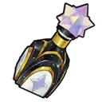

Amostra de Poeira Estelar
Poção · Tier 6 · Nível 19
A reduflação é real. Mas, independentemente disso, esse negócio é POTENTE.
Atributos
Ataque
30
Vida
30
Economia
Valor
57.500
Tempo de fabricação
1h 20min
XP do comerciante
21.000
Trabalhadores: Herborista 16, Sacerdotisa 12
Receita


Marcos do projeto
7
Tempo de fabricação -25%
18
-25 Ervas
32
Valor +25%
50
-1 Escamas de wyrms da ferrugem
80
Chance de qualidade +1